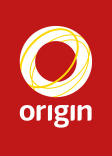

Origin Energy
Three months - 2015 to 2016
I was involved in many projects at Origin, including creative content creation, blogging for their social media platforms and assorted UX work with their web design team.
My name is Mitchell Torney; I'm an aspiring designer, cat owner and horror movie fanatic. I've been a small country guy for most of my life, and have just recently pulled through univeristy with a Bachelors in Digital Media.
I'm passionate about all things customer related, be it marketing, UX Design or developing customer journies. I've found myself in this growing and exciting new market through work placements in my own budding career as well as a natural progression from my old career interest in becoming a web developer.
Three months - 2015 to 2016
I was involved in many projects at Origin, including creative content creation, blogging for their social media platforms and assorted UX work with their web design team.
Three months - 2016 to 2017
This time round I was placed in a dedicated UX and communications team after doing a rotation in their call center.
I got to work on an interface for a program designed to connect banking and retail departments together across areas, from start to finish. I also got to do some minor creative projects here and there.
Mid July, 2017 - late December, 2017.
I interned at Almost Anything for a chance to brush up on my creative skills; whilst there I primarily focused on UX work, but also got to try my hand at developing high fidelity prototypes and working on marketing schemes.
Graduated in 2017 with a Digital Media Bachelor
The degree took roughly two and a half years to complete, and covered a wide array of topics, from marketing to video editing to web design and development. It also gave me many opportunities; the previous work internship opportunities for instance.
{kind=link}
{kind=link}
{kind=link}
{kind=link}